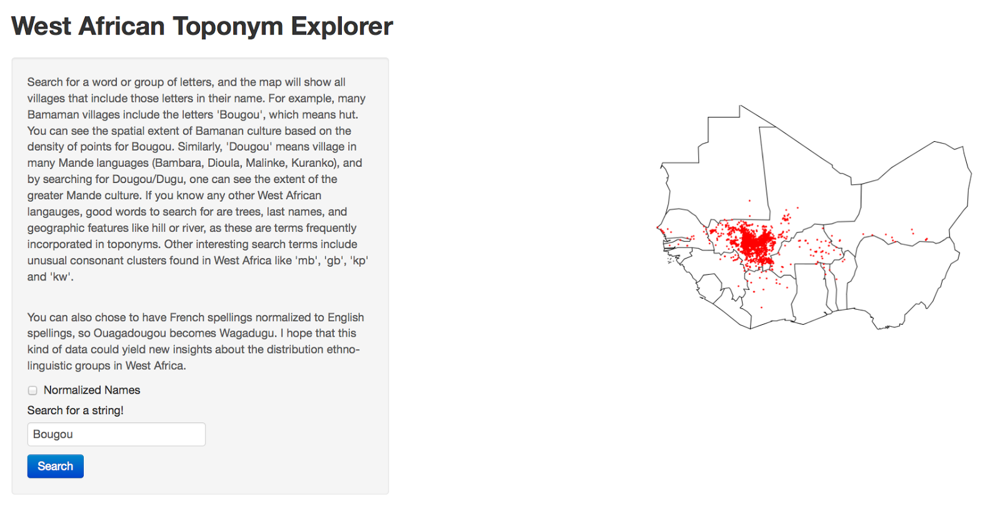

West African Toponym Explorer
Check out
this Shiny App that I made.

Here's why I made it:
After living in a rural village in Mali for over a year, I'm still not sure what ethnic group they are, or what language they speak. I studied Bambara in the capital, and since I can speak with them, they must speak Bambara, right? Well, they tell me that they speak Dyula. At least, most of them do. Others tell me that they speak Malinké, or Tabushi (although it all seems to be the same language, with significant variation). They also tell me that Dyula is spoken throughout West Africa - from Sierra Leone to Abidjan to Burkina Faso. This seems surprising to me, because I had never heard of Dyula until I got to Africa. I've done a lot of looking around to see what academia and the internet have to say about West Africa's languages - how diverse they are, and where they should be found. But there's not a lot of good information out there. Anything very descriptive and at region scales is decades old. Most modern stuff focuses on individual case studies and rarely has a spatial component. What seems to be the best maps come from christian missionary groups like the SIL (who produces the Ethnologue) or the Joshua Project, and are still pretty unsatisfying by academic standards. In short, the information I can find about ethno-linguistic groups in West Africa, by searching the internet and academic sources, is unclear, missing, or contradictory.
For example, it's known that the Bambara people are based in Mali, and their extent kind of crosses those borders, so the best map I could find of where Bambara is spoken is
this one, which is just a circle someone drew on a map. Is Bambara really spoken that widely? Did whoever made that map really travel to all of those countries? Where is it a minority language and where is it a majority language? Other maps of West Africa, like perhaps
this one, seem to have more naturalistic borders (ie, not too smooth), but are still unsatisfying. Where is the boundary between Malinke and Bambara? How porous is that border? Any why does this map differ so much from the other one? I don't think sources would disagree so widely about the boundaries between where French and German are spoken in Europe, yet ethnolinguistic maps in West Africa are all over the place! So it seems to me that there is still work to be done.
Recently, I discovered an awesome dataset called Geonames, which has coordinates for thousands of place names (toponyms), including over 150,000 villages in West Africa, and I think this could help give better resolution on the distribution of ethnolinguistic groups. I am still playing with the data and sorting it out, but it is certainly obvious that different key words can reveal much about the distribution of different ethnic groups. For example, 'Bougou' is a common suffix in Bamanan village names, and searching for 'Bougou' gives a pretty clear indication of the spread of Bamanan culture, especially where the boundaries are more porous. I'm trying to think of ways to aggregate this dataset systematically to map boundaries between toponyms and thus ethno-linguistic groups.
Some clear drawbacks with this are that it doesn't show more recent language patterns, such as the emergence of Dyula as a trade language. Another issue, which I've tried to normalize for, is that the English and the French (the two biggest colonizers in West Africa), often spelled local pronunciations for things differently, so what would be Nyakwaju in English could be Gnacouadiou in French. Nevertheless, just playing around with different queries in the dataset shows that many groups of letters have distinct spatial distributions that must correspond to ethnic groups.
{kind=link}
{kind=link}